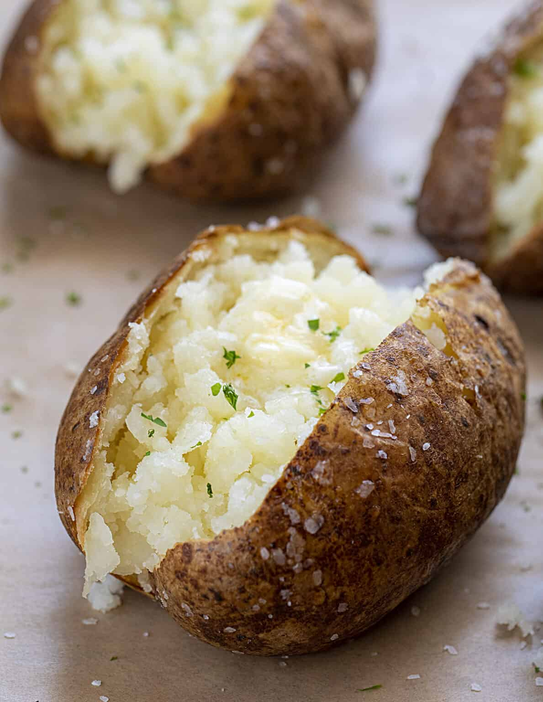

7 minutes microwave potato

Description
This recipe is incredible easy, cheap, and convenient. I first came across this recipe from a dear friend, she prepared this recipe to me and I was thrilled.
Certified hood classic.
Ingredients
- 1 Russet potato
- Butter
- Salt (A bit more than you think is necessary)
(Optional) Spices
- Black pepper
- Onion powder
- Garlic powder
- Paprika
Steps
- Take the potato and wash it thoroughly.
- Use a fork to make several punctures on all sides of the potato.
- Microwave the potato for 3 minutes on one side, then flip it and microwave for another 3 minutes on the other side.
- Once it's ready, remove it from the microwave, cut it in half, and mash the inside with a fork.
- Add small pieces of butter and season with salt, pepper and spices (optional) to taste.